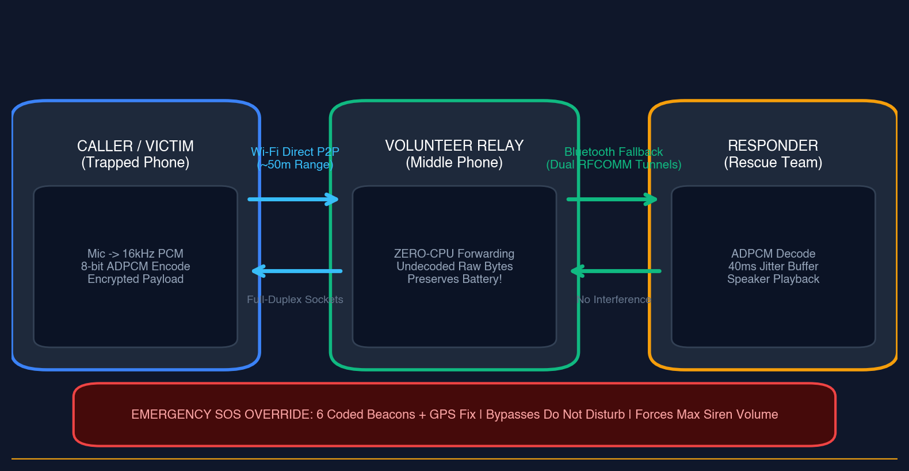
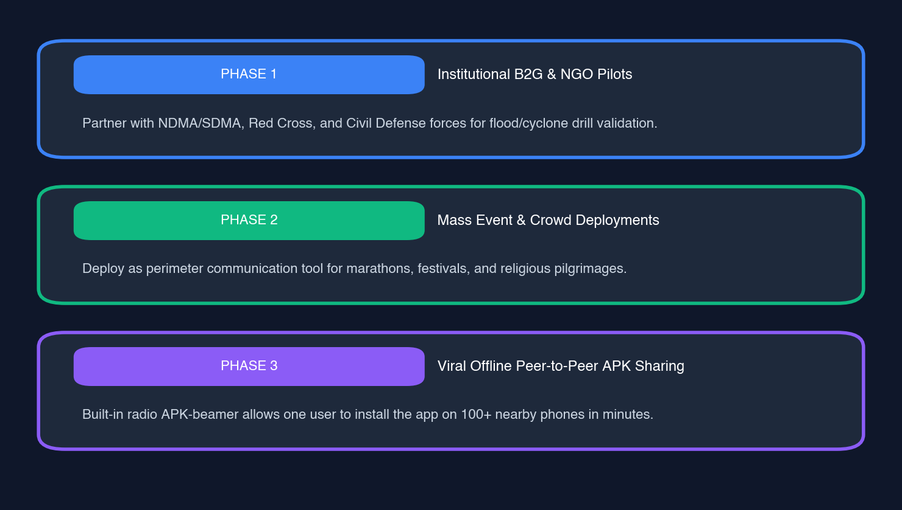
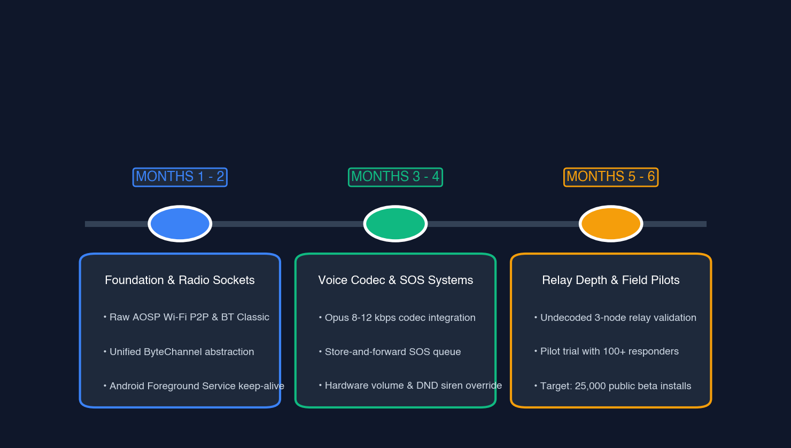

When the towers collapse, your phone becomes the network.
In cyclones, flash floods, earthquakes, and crowd surges, conventional cellular infrastructure dies within minutes. Vois restores immediate, full-duplex voice calling between everyday smartphones over built-in Wi-Fi Direct and Bluetooth—with zero cell towers, zero internet, and zero SIM cards.
Modern society treats cellular reception as a guaranteed utility. In reality, modern mobile telecommunications rest upon an exceptionally fragile chain of physical power lines, sub-station diesel generators, and buried fiber-optic backhauls. A single sudden disaster severs them all.
Grid Failure Cascades
Cyclones, flooding, and seismic shocks take down high-voltage power lines within seconds. Base stations burn through modest backup batteries in under 45 minutes, creating an absolute regional communication blackout precisely when 911 calls peak.
The Crowd Surge Paradox
Even with 100% operational hardware, when 40,000+ people converge into a stadium, marathon, or religious pilgrimage (like the Kumbh Mela), RF spectrum capacity saturates immediately. Cellular radios report five bars, yet zero packets pass through.
Why Existing Options Abandon You
WhatsApp and cellular calling depend entirely on distant base towers. Dedicated walkie-talkies cost ₹5,000 to ₹15,000 and sit in locked security closets. Satellite pucks charge ₹3,000 monthly subscriptions. LoRa is text-only. The moment chaos strikes, voice fails.
78% of Disaster Mortalities Occur in the First Six Hours
Search and rescue teams call it the Golden Window. When communication fails, the disaster does not just destroy buildings—it isolates human beings across microscopic physical distances.
Case Scenario 01
Separated Across 100 Meters of Floodwater
During the Chennai and Kerala monsoon floods, families were stranded on adjacent rooftop terraces just 80 to 120 meters apart. Cellular towers were submerged. Shouting was impossible over the torrential roar of rain and engine noise. With zero connectivity, they could neither verify survival nor coordinate rooftop evacuation ladders.
Case Scenario 02
The Fatal Battery Drain Loop
A survivor trapped under collapsed masonry after a seismic tremor has 22% smartphone battery. The device's cellular radio boosts transmission power to maximum (Class 4 RF output) desperately hunting for a destroyed cell tower. In less than 90 minutes, the phone dies in the dark—destroying both the beacon and the flashlight.
Case Scenario 03
The Panic & Literacy Barrier
Text-based emergency messengers demand clear eyesight, fine motor finger coordination, and literacy. An injured worker in a smoke-filled metro basement or an elderly civilian in shock cannot type SMS coordinates. They need a human voice: press one button, speak, and hear another human confirm rescue.
200 Million+Civilians exposed annually to severe floods, cyclones, and quakes
50 Million+Pilgrims & event participants subjected to severe crowd blackout risks
30 Million+Industrial personnel operating daily in concrete, underground, and mine dead zones
An Indestructible Voice Mesh in Every Pocket
Vois re-engineers standard consumer smartphones into autonomous, direct radio transceivers. By combining Android Wi-Fi Direct and Bluetooth Classic RFCOMM behind a unified byte stream, phones link peer-to-peer to create an organic, self-healing communication grid.
Dual-Radio Autonomous Transport
Wi-Fi Direct (Primary): Establishes high-throughput TCP socket tunnels across ~50 meters in open air at port 8988. Bluetooth RFCOMM (Fallback): Automatically takes over across ~10 meters via SPP UUID 00001101 when Wi-Fi is obstructed. Both hide seamlessly behind a single ByteChannel abstraction.
Zero-CPU Undecoded Relays
When a middle phone relays voice packets between two distant nodes (Node A → Middle Node → Node B), it never decodes the audio to PCM or runs DSP filters. Raw compressed bytes are streamed directly downstream, consuming <1.2% battery/hr and preserving the relay node's life.
Voice-First Push-to-Talk (PTT)
Full-duplex calling for two-way conversation or hold-to-talk Walkie-Talkie mode. Optimized for high-stress panic situations with zero menus, zero login screens, and zero text keyboards.
Pocket-Survivable SOS Siren & GPS
Six coded emergency presets (Trapped, Medical, Fire, Flood, Need Water, Safe). Bypasses Android Do Not Disturb, ramps device speaker volume to 100%, triggers tactile pulsing vibration, and broadcasts cached GPS coordinates.
Store-and-Forward Offline Queue
Triggering an SOS in a deep basement with no phone currently in range does not drop the distress signal. Packets are held in a memory FIFO queue with a 30-minute TTL. The instant another person with a smartphone walks within range, the SOS transmits automatically.
Viral Offline Radio APK Beamer
How do survivors install the app when the internet is completely dead? Vois contains an integrated direct radio installer beamer: one equipped device can broadcast the full Android APK to 100+ surrounding phones completely offline in under 30 seconds.
Interactive Mesh & Voice Audio Simulator
Experience how the radio mesh behaves when cellular grids die. Cut the cell tower power, transmit encrypted voice frames through zero-CPU relay nodes, and test the Push-To-Talk radio audio feedback.
Network State:Cellular Grid Online
Cell Tower
Trapped Node A
Zero-CPU Relay B
Responder Node C
Wi-Fi Direct (~50m)
Push-to-Talk (PTT) Audio Simulator
Hold the button to open radio channel, speak, and hear the real-time synthesized radio squelch and mic click:
Ready. Audio synthesized via Web Audio API.
Pocket-Survivable SOS Beacons
Select a preset to inspect the wire payload packaged with GPS fix & DND bypass:
Engineered for Zero CPU Waste and Maximum Survivability
A peer-to-peer radio protocol in a disaster zone has strict engineering constraints: volunteer phones cannot afford battery exhaustion, and audio cannot stutter over unstable RF reflections.

Figure 1: Full-Duplex Audio Pipeline and Zero-CPU Undecoded Packet Relaying across Wi-Fi Direct and Bluetooth Classic.
Audio Pipeline & Compression
Audio is sampled at 16 kHz mono 16-bit PCM. Every 20ms chunk (320 samples, 640 raw bytes) is compressed via an adaptive 8-bit ADPCM codec down to 320 bytes. With our 3-byte binary frame header, each packet is exactly 323 bytes (~129 kbps wire rate).
[1B Type][2B LE Length][320B ADPCM Audio / Cipher Payload]
40ms Jitter Buffer & Socket Tuning
Radio propagation in rubble environments suffers from RF reflections and channel fading. The Vois receiver maintains a strict 40ms jitter buffer (2 audio frames), absorbing packet arrival timing fluctuations while preserving conversation flow without noticeable conversational lag.
Zero-CPU Undecoded Forwarding
In multi-hop paths, middle phones read the framing header and pump raw payload bytes directly from socket input to socket output. No PCM decoding, no resampling, no FFT. Relay phones preserve battery life for multiple days of emergency operation.
Bridging Civilian Survival and First-Responder Command
Vois provides immediate operational value to both vulnerable civilians and institutional emergency agencies who cannot wait hours for mobile cell towers (Cells On Wheels) to be deployed.
Sustainable Scale: Public Good Meets Enterprise Utility
A disaster communication network must be freely accessible to every civilian on earth, yet supported by a viable enterprise and municipal business model to fund continuous protocol engineering.

Distribution Funnel: Institutional adoption drives viral offline reach.

Roadmap: Engineering sprints leading to state disaster management pilots.
Civilian Public Good Free Forever
₹0 / $0
Available to any person with an Android phone worldwide. Because safety should never depend on a subscription.
Direct Wi-Fi Direct & Bluetooth RFCOMM calling
One-touch Push-To-Talk walkie-talkie
Pocket-survivable SOS siren with GPS bundling
Zero-CPU multi-hop audio relaying
Built-in offline APK radio beamer
Zero telemetry, zero ads, zero accounts
Command Fleet & Industrial Console Municipal & Enterprise
Annual Municipal / Enterprise Contract
Hardware consoles, fleet encryption keys, and desktop incident management for State Disaster Authorities (SDMA), municipal police, mining operations, and industrial plant crews.
SAM (Serviceable Addressable Market)$4.2 BillionOff-Grid Civilian Safety & Local Workforce Communications
SOM (Serviceable Obtainable Market)$380 MillionSouth Asian Public Safety, Monsoon Relief & Event Safety Market
Why Vois Outclasses Traditional Alternatives
Existing emergency communication options either fail during total infrastructure collapse or require dedicated, expensive hardware that ordinary citizens do not possess.
Key Metric / Capability
Standard Apps (WhatsApp)
LoRa / Meshtastic
Hardware Walkie-Talkies
Satellite Pucks
VOIS P2P (Ours)
Infrastructure Needed
Cell Tower & Internet
Custom LoRa Nodes
Zero (Standalone)
Orbital Satellites
ZERO (Everyday Phones)
Civilian Hardware Cost
₹0 (Uses smartphone)
₹3,500 – ₹8,000
₹5,000 – ₹15,000
₹25,000 – ₹50,000
₹0 (Existing Android)
Monthly Subscription
Cellular Plan Required
None
None
₹2,000 – ₹5,000 / mo
NONE (100% Free)
Real-Time Voice Call
Yes (Dies with grid)
No (Text Only)
Yes (Half-duplex)
No (High Latency Data)
YES (Full-Duplex & PTT)
Panic SOS & Siren
None
Basic Text Broadcast
None
Delayed SOS Ping
YES (DND Bypass + GPS)
Offline App Distribution
Impossible without web
Requires PC Flashing
Physical Hand-off
Store Purchase
YES (Radio APK Beamer)
RELEASE v1.1.0+2PRODUCTION BUILD
Download Vois for Android
Instant offline peer-to-peer radio communication. No phone numbers, no email addresses, no tracking, and zero servers.
Click the download button above directly from your Android browser. Tap Open once downloaded.
02
Allow Unknown Sources
If prompted by Android security, allow installation from your browser (Settings → Install Unknown Apps → Allow).
03
Grant Radio Permissions
Grant Wi-Fi Direct, Bluetooth, and Microphone permissions when opened. You are instantly ready to communicate off-grid.
How to Share Vois Completely Off-Grid
If the cell network is already down and friends or victims need the app, open Vois → tap the "Beam App Offline" icon. Nearby Android phones can connect directly to your temporary Wi-Fi hotspot and download the installer APK in under 30 seconds without a single byte of internet.